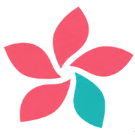

熊本城
熊本市中央区
加藤清正が築き、1607年ごろに完成しました。石垣の美しさと、大きな天守で知られます。2016年の熊本地震で被災し、いまも復旧が進んでいます。見える景色は、工事の進み具合で変わります。
歩いて回るときは、坂と石段が多いので、無理のない時間を選びましょう。

あなたのペースで、今日の「したいこと」を。
天気は、お住まいの地域の予報を、自動で取り込みます。うまく出ないときだけ、下の欄に手で入れてください。
いまは見本の数字です。今日の予報に合わせて変えてください。完成版では自動で入ります。
ラッキーカラー
ラッキーアイテム
花言葉は、いくつかの説があります。ラッキーは、毎日をたのしむための、遊びです。
今日は【OK】 よい一日です。
✨ いいこと
⚠ ちょっと注意
楽しむための、遊びの占いです。注意は「気づきの合図」。よいことも、気をつけることも、あなたを育てる、チャンスとして受け取ります。
知らない自分を、体感しませんか。
体調、歩いた量、お住まい、いつも楽しんでいることから、いつもの自分と「1mmだけ違う」ことを、ご案内します。この判断は、この端末の中だけで行います。
「自分のしたいこと」は、この端末の中だけに、残ります。
毎日つかう
楽しむ・学ぶ
もしものとき・設定
押すと、電話の画面が開きます。かけるかどうかは、ご自分で決められます。
クマや不審者の情報は、お住まいの市町村や警察が出す連絡（メール配信など）が、いちばん早く正確です。ここのボタンは、ニュースの検索結果です。
台風や大雨のときは、電車・バス・飛行機が止まることがあります。出かける前に、公式の情報で確かめてください。
お使いのバス・電車の会社の公式ページでも、確認してください。
押すと、Googleマップが開いて、いまいる場所の近くのお店が出ます。営業時間や道順も、そこで見られます。（位置情報の許可が出たら、「許可」を押してください）
☕ 気分転換に、ほどよく歩く「徒歩○分」は、探すときの目安です。地図に出る距離を見て、無理のないお店を選んでください。
金額は、お店の情報にある目安で探すため、ぴったりとは限りません。メニューや値段は、お店で確かめてください。
いまいる場所から、行きたい場所へ。
時刻・料金は検索先で確認します。タクシーの注文は配車サービスで行います。
トレンド、全国、国内、海外、お住まいの県のニュースを、Yahoo!ニュースで読めます。別のタブで開きます。ケセラにもどるときは、ブラウザの「タブ」(重なった四角のボタン)から、ケセラを選びます。
お住まいの県は、「⚙ 設定」の「お名前・お住まい」で変えられます。
青空文庫で、文学作品をゆっくり楽しめます。別のタブで開きます。
ケセラとあわせて楽しめる、無料のサイトです。別のタブで開きます。これからも少しずつ増えていきます。
幕末の長州と萩をたどる、歴史の旅の栞です。人物・年表・史跡・ミニテスト・萩のゆかりの地を、読みがなつきで楽しめます。
50代・60代・70代の服選びのお手伝いです。「清潔感がある」「少し若々しい」を目安に、仕上がり・帽子・小物の選び方を紹介します。AIへの相談はお試しの回数があります。
小麦・乳製品・植物油・砂糖を使わない、毎日のごはんのレシピです。人数に合わせて分量が変わり、料理への道（初級〜上級）や、旬の食材のお話も楽しめます。
「声で入れる」を押して話すと、文字になります。まちがいは「修正」で直せます。「保存」でメモに残し、「予定予約」で日にちを決めると、その日に大きくお知らせします。
メモは、この端末の中だけに残ります。
台風、線状降水帯、熱中症に注意が必要なときは、画面の一番上に、大きくお知らせします。「読みました（消す）」を押すと、消えます。
いまの試作では、「最高気温33度以上」のとき、熱中症のお知らせが出ます（天気の欄の数字をもとにしています）。台風や大雨のお知らせは、運営が公開した情報があるときに出ます。
正式な警報・避難の情報は、必ず、気象庁や市町村の発表をご確認ください。
気象庁 防災情報 ／ 環境省 熱中症予防情報（暑さ指数）
「たすけて」の画面から、ここのご家族に連絡できます。ボタンを画面に出すか出さないかは、下で選べます。この端末の中だけに保存します。
ご本人が許可したときだけ、ご家族に「使った日数」と「使った時間」をお知らせします。いまはオフです。
お知らせしない内容：会話の中身、食事の記録、ひとこと、行った場所。いつでも、オフにもどせます。
いまの試作では、自動では送りません。送るボタンを押すと、メールの画面が開きます。内容をご確認のうえ、ご本人が送信してください。毎週の自動送信は、運営の仕組みができてから加えます。
文字の大きさ、デザイン、声、お名前・お住まい、緊急連絡先、ご家族への見まもりなどは、すべてここで変えられます。
著作権が切れて、だれでも無料で読める、日本の名作です。まず「読む力」を選び、つぎに、気分のジャンルを開いてください。
読みはじめと、読みおわりに、ボタンを押すだけ。そのたびに、ほめ言葉が出ます。
何を読みますか？ 読みごたえ参考：総務省「令和3年社会生活基本調査」では、「趣味としての読書（マンガを除く）」をした人は、10歳以上の31.6%（2016年は38.7%）でした。世代別の読書時間の数字は、公式の統計で、ご確認ください。
📊 世代別の読書時間（公式統計を検索）「脳の活性化」は、読んだ時間と、読みごたえから出す、楽しむための目安です。医学的な測定ではありません。
作家の人生、作品の時代背景、「次に読むなら？」など、気になることを聞いてください。
作品の「♥ 好き」「✓ 読んだ」を押すと、好みを学んで、つぎのおすすめに生かします（この端末の中だけ）。
作品は、青空文庫（aozora.gr.jp）で、無料で読めます。「青空文庫で探す」を押すと、検索の画面が開きます。
お住まいの近くの、神社・学校・お店・行事を、ひとつずつ、調べる入口です。押すと、検索の画面が開きます。
各カードの「🚃 行き方・運賃」「🚗 所要時間」「🚶 歩いて」は、地図の経路の画面が開きます。位置情報を許可すると、出発地が「いまいる場所」になり、電車・バスの時刻、所要時間、運賃（電車・バスの場合）が出ます。
困っていること、こうなったらいいなと思うことを、きちんと伝わる文章にします。送る先は、あなたが選びます。
伝わるコツ：①事実と、お願いを、分ける ②きつい言葉は使わない ③返事がほしいときだけ、連絡先を書く。住所・電話番号・口座などは、必要なときだけにしましょう。
開催日・時間・場所は、リンク先の最新の情報でご確認ください。ケセラの中には、行事の日程は載せていません（古い情報を、お伝えしないためです）。
毎日、ほんの少し。知って、動かして、整えて、自分をアップデートします。見出しを押すと、開きます。
声を出して笑うと、気持ちが、すっと軽くなります。心のもやもやを、笑いで、空っぽにしましょう。
ダジャレを作って、みんなで笑いあいましょう。はじめての方は「ススメ」から。
怒りたいこと、いやだなと思うことを、ここに書いてください。書いた文字は、5秒で、消えます。どこにも、保存されません。
つらい気持ちが、何日も続くときは、ひとりでかかえず、身近な人や、お住まいの相談窓口に、話してみてください。
押すと、YouTubeで検索します。気に入った動画を、見つけてください。
笑いは、無理をしないのがいちばんです。体調がすぐれないときは、休んでください。個々の動画は、日々入れかわるため、検索の形で、ご案内しています。
保険証・お薬は、持ち物の確認です。番号などは、書かなくて大丈夫です。体調がいちばん。いつもと違うときは、予定を、やめてかまいません。
写真・動画は、この端末のなかだけに、保存されます。ブラウザの「サイトデータ」を消すと、消えてしまうので、大切な写真は、携帯のアルバムにも、残してください。動画は、20MBまでです。
心が動いた一瞬を、ことばにして残す。それが、あなたの「歴史に残る記憶日誌」になります。
俳句は、五・七・五の十七音。季節のことば（季語）を入れるのが、ならわしです。江戸時代に芭蕉・蕪村・一茶、明治に正岡子規が、大きく育てました。
短歌は、五・七・五・七・七の三十一音。季語は、いりません。万葉集から千三百年以上、人の思いを、うたってきました。
音（おん）の数え方：「ゃ・ゅ・ょ」や小さい「ぁぃぅぇぉ」は、数えません（きょう＝2音）。「っ」「ん」「ー」は、1音です（がっこう＝4音）。
切れ字：「や」「かな」「けり」は、句に余韻をつくる、ことばです。
上手・下手よりも、「何に心が動いたか」が、いちばん大切です。
ケセラが作った例です。まねしながら、自分のことばで、詠んでみましょう。
作品の点数は、きまりごと（音数・季語・切れ字・感覚のことば・感動メモ）のチェックです。作品の良さを決めるものでは、ありません。
％は、ケセラの中での「目安（設計上の割合）」です。実際の歌人の統計では、ありません。
どの部でも、あくまで体調優先です。調子がよくないときは、お休みしてください。
ダジャレを作って、投稿して、「共感」を集めましょう。共感の多い順に、ランキングされます。
うまく作れなくても、大丈夫。「ことばで遊ぶ」ことが、いちばんの目的です。
この「共感」は、この端末の中だけの記録です。ほかの方との、全国ランキングは、サーバーが必要なため、まだつながっていません。人を傷つけることばは、使わない、のがルールです。
季節の花の名所を、時期とお住まいからの近さで、ご紹介します。みごろは、その年の気温で前後します。出かける前に、公式の情報で、確かめてください。
写真は、「写真を見る」のボタンで、検索の画面が開きます。お持ちの写真があれば、ケセラに入れることもできます。
折り紙以外は準備中です。
多くの作品の、最初の形になる折り方です。
角がずれたときは、いったん開いて折り直して大丈夫です。
脚の力と、バランスを保つ力を、ひとりで続けやすい動きです。
できたら、下のボタンを押してください。
スマホの「ヘルスケア」(iPhone)や「Googleフィット」「Samsung Health」などに出ている歩数を見て、数字を入れてください。ケセラが、スマホの歩数を自動で読み取ることは、いまはできません。
目標は、ご自分で決めてください。目安です。ご自分のペースで、大丈夫です。
ひとことは、この端末の中にだけ残ります。みんなに見せる機能は、運営の確認の仕組みを作ってから加えます。
プチマッチョ、プチお化粧、プチ着こなしは準備中です。
ストリートビューは、新しいタブで開きます。映像は地図サービスのもので、道路から見える範囲になります。見終わったら、この画面にもどってください。
位置は、公開されている資料の座標（熊本城＝便利帳の地図データ、水前寺成趣園＝ウィキペディア）をもとにしています。ストリートビューは「いちばん近い撮影地点」から開くため、園内や城内では、道路や入口付近の景色になることがあります。もし景色がずれたときは、「地図で見る」から場所を開き、画面の黄色い人形を道へ動かしてください。
熊本市中央区
加藤清正が築き、1607年ごろに完成しました。石垣の美しさと、大きな天守で知られます。2016年の熊本地震で被災し、いまも復旧が進んでいます。見える景色は、工事の進み具合で変わります。
歩いて回るときは、坂と石段が多いので、無理のない時間を選びましょう。
熊本市中央区
江戸時代の初め、熊本藩主の細川家が造った庭園です。東海道の景色を模したと伝わり、池のまわりをめぐって楽しむ形になっています。池の水は、阿蘇の伏流水の湧き水といわれます。
園内は砂利道や段差があります。歩きやすい靴で、ゆっくり回りましょう。
下の一覧から、見たい動画を選んでください。
いま：まだ再生していません
YouTubeで見つけた動画の、アドレス（URL）を貼り付けて保存します。
保存した一覧は、この端末のブラウザの中に残ります。ブラウザのデータを消したときや、機種を変えたときは消えます。「控え」をコピーして、LINEやメモに残しておくと安心です。
雨、波、風の音を、この端末の中でつくって流します。インターネットがなくても聞こえます。本物の録音ではなく、自然音に似せた音です。
小麦・乳製品・植物油・砂糖を使いません
1人分です。しょうゆ、みそ、だしの素、納豆のたれなどは、小麦や砂糖が入っていることが多いので、原材料を確認してください。
🍲 四毒抜きレシピ帳で、もっと探す YouTubeで同じような料理を探す食べたものを、かんたんに書きとめます。記録は、この端末の中にだけ残ります。
旬の花を、長くきれいに楽しむ基本です。
家庭菜園とプランター菜園が中心の倶楽部です。ベランダや庭先の小さな畑から、気軽に始められます。
今度の集まり：まだ予定はありません。
育っても、育たなくても、記録を残しませんか。
精一杯、あなたのために育った花や野菜です。愛でてあげましょう。
写真と一言で、かんたんに書きとめます。写真は、撮った場所の情報を消して、この端末の中に保存します。
「自然農法」のやり方や考え方は、人によってさまざまです。ここでは、効果や収穫量をお約束するものではありません。
服の選び方のお手伝いです。ケセラの中で、そのまま使えます。うまく表示されないときは、下の「そのまま開く」を押してください。
声か文字で聞いてください。例：「クリエイティブとは何ですか」「還付金とは何ですか」
住所・電話番号・マイナンバー・口座やカードの番号・暗証番号は、書かないでください。
お金の話が出たら、まず詐欺を疑ってください。
相談先
お金をだまし取られそうなとき、だまされたかもしれないときは、すぐに110へ電話してください。
お話の相手を選んでください。
住所・電話番号・マイナンバー・口座やカードの番号・暗証番号は、書かないでください。
⚠ 電話番号・住所・マイナンバー・暗証番号は、話さないでください。
お話の間は、画面が消えないようにします。しばらくお話がないときは、自動でお休みします（お話がない間の時間は、数えません）。
ふつう：1日1時間まで（基本料金に含みます）。たくさん話すコース：1日2時間まで、600円／月。たっぷり話すコース：1日3時間まで、900円／月。この試作では、請求はしません。
声で話すのが心配な方は、文字だけでも、お話しできます。